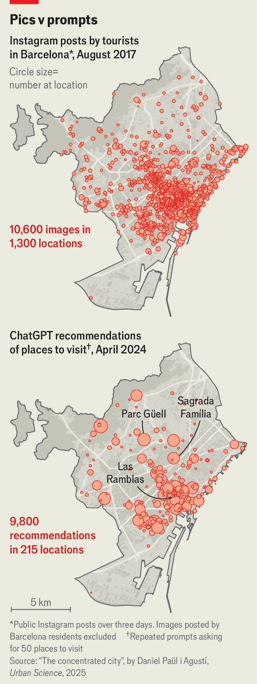
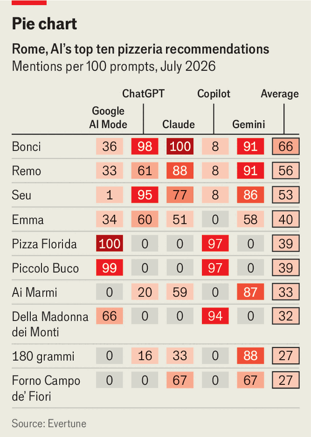

Can AI save tourists from the TikTok herd?
Some fear that chatbots will lead everyone to the same places. In fact, they may do the opposite
Aug 13th 2026
AS THE midday sun beats down in Rome, tourists realise with relief that it is time for a pizza. But which one? Lonely Planet, the best-selling guidebook series, recommends Antico Forno Roscioli’s “delectable” slices. Tripadvisor’s top pick is Da Cicero, near the Trevi fountain, with more than 2,000 five-star reviews. TikTok-famous spots include Piccolo Buco, identifiable by its long queue of hungry Gen Zs.
The way travellers have found inspiration and itineraries has evolved over the centuries. Early Victorian travellers were shepherded around foreign lands by travel agents such as Thomas Cook, who offered English tourists protection from the horrors of continental railway porters (“tobacco- or onion-scented, blue-frocked varlets”, as Cook described them). Some tourists still prefer to have their hand held. But many go independently. Guides such as France’s Routard direct travellers to the best spots. A mention in the Lonely Planet is still enough to fill a Bangkok hostel or Kathmandu curry house.
The internet has changed things, thrice. First, review platforms like Tripadvisor have harnessed the wisdom of crowds to rate everything from Britain’s pubs to Egypt’s pyramids (“too much sand”, complains a one-star review). They hold enormous clout. Dante Donati of Columbia Business School found that, when the European Union abolished mobile roaming charges in 2017, the associated uptick in visitors consulting Tripadvisor on the go resulted in a 5% revenue bump for Rome’s tourist-oriented restaurants, largely benefiting the highest-rated.

The second digital change to travel advice has come from social networks. Their effects are more chaotic and less predictable, as apps’ algorithms unexpectedly alight on an attraction and blast it into the feeds of millions of users. Photogenic places like Hallstatt, a picture-perfect lakeside town in Austria, have been overrun. “TravelTok” crazes have sent mobs to queue for hours at unsuspecting eateries.
Now people are turning to chatbots. Last summer 55% of Americans used an AI app like ChatGPT to plan their holiday, up from 38% the previous year, according to McKinsey, a consultancy. The numbers will probably rise again. Old sources of advice are out. Guidebook sales have fallen sharply over the past two decades. Tripadvisor has blamed ai for stealing its web traffic, which is estimated to have fallen by a fifth in the past year.
Many worry that AI could make tourism even more concentrated. The large language models powering chatbots are prediction machines primed to give the most likely answer. Make an open-ended request for travel tips and you will be steered to exactly where everyone else is going. Research by the University of Westminster found that ChatGPT showed “a marked preference for well-established tourist hubs”, recommending such hidden gems as the Eiffel Tower and the Colosseum.
This could narrow travellers’ horizons. Daniel Paül i Agustí of the University of Lleida examined how ChatGPT’s travel advice compared with places they might see on Instagram (see map). He collected 10,000 recommendations of places to visit in Barcelona from ChatGPT. He then harvested a similar number of photos of the city posted by tourists on Instagram, and coded their location. Whereas the Instagram images came from some 1,300 different places, ChatGPT recommended a narrower selection of 215 places, majoring on hotspots like the Sagrada Família. (It also suggested 38 attractions that appeared to be made up.) AI’s focus on the best-known sites could “lead to tourist overcrowding”, Mr Paül i Agustí warned.
Yet AI may eventually have the opposite effect, dispersing tourists to a wider range of places than they visited in days gone by. First, because models are trained on different sources, they can give very different advice. We asked Evertune, an AI analytics company, to help solve the Rome pizza dilemma by quizzing chatbots. ChatGPT, which based its answers mainly on online guides and Reddit threads, favoured Pizzarium Bonci, near the Vatican, and Seu Pizza, which has won a string of awards. Google’s AI Mode, which drew on Google Maps reviews, suggested Pizza Florida, a by-the-slice place close to the Pantheon.
Not only do chatbots disagree with each other—they also disagree with themselves. Their probabilistic nature means that they give varying answers to identical queries. Evertune found that Gemini’s jointly most-recommended pizzerias (see chart), Remo and Pizzarium Bonci, featured in 91% of its answers (in other words, nearly a tenth of users would not be told about its top picks). In all, Gemini recommended a long tail of 24 different places.

AI’s greatest promise to travellers is personalised advice. Perhaps a tourist in Rome wants a gluten-free pizza (their AI guide might propose somewhere like La Soffitta Renovatio), or a pizza with pineapple (it might suggest a psychiatrist). Chatbots can act like modern-day Thomas Cooks, drawing up tours for any taste: the best chocolatiers in Paris, a walk around literary London, America’s wildest water parks or whatever the traveller is into. The average chatbot prompt is about 25 words long, suggesting people are posing relatively complex queries.
Even if travellers are unimaginative with their questions, AI models increasingly personalise their answers based on past interactions. If a chatbot knows you are a vegan, or a big spender, it will calibrate its suggestions accordingly. “In the past, we all saw the same blue links on Google,” says Brian Stempeck of Evertune. AI’s answers are “more like the Spotify algorithmic feed”, tweaked according to the user’s history. Consumers live in personalised bubbles when it comes to music. Travel could go the same way.
For those tired of following the herd, this will be welcome. Most guidebooks make mainstream recommendations. Online review platforms, subject to the tyranny of the margherita-eating majority, promote the most broadly popular stuff. AI’s tendency to match travellers to their interests, whether they ask it to or not, promises to redistribute visitors away from tourist hotspots. Whatever guidebook writers or online influencers think is the best pizza in Rome, your chatbot is ready to serve up a slice made for an audience of one. ■